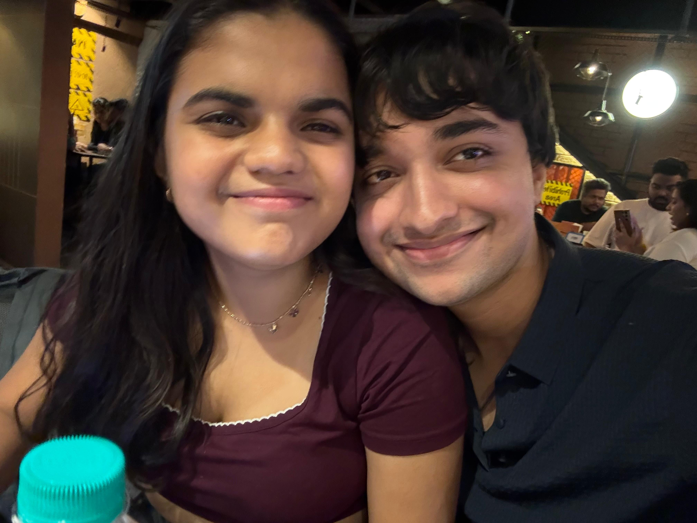
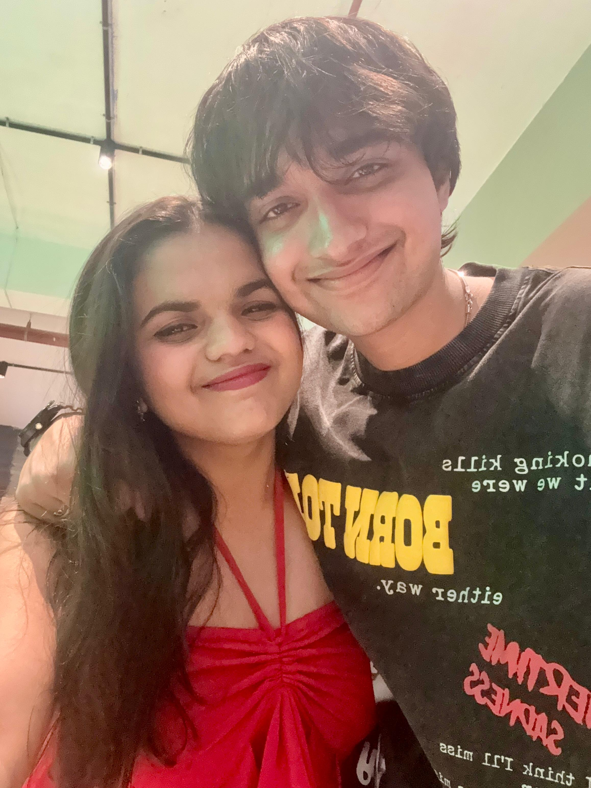
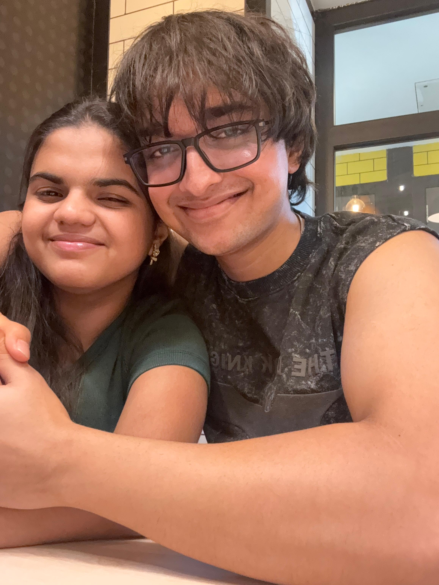
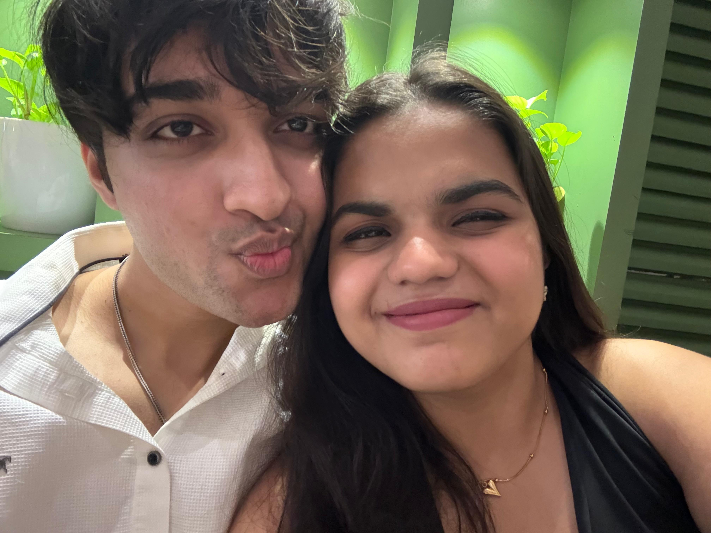
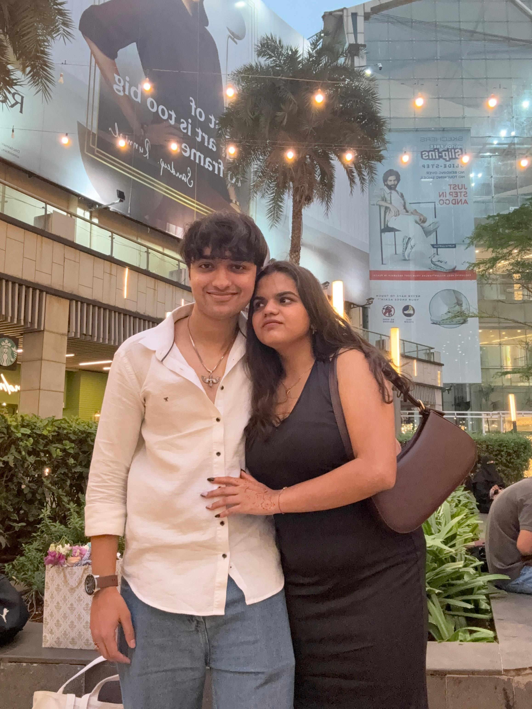
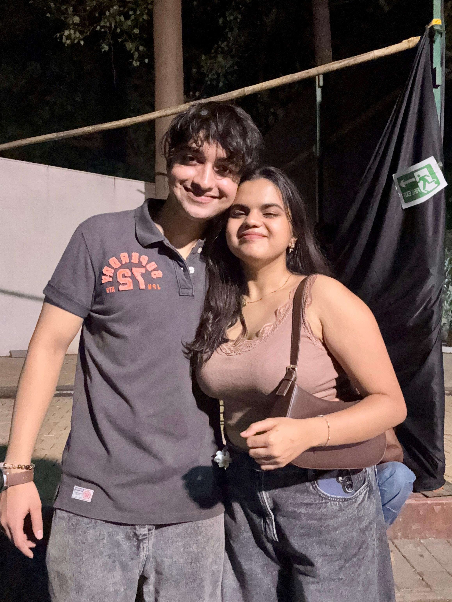
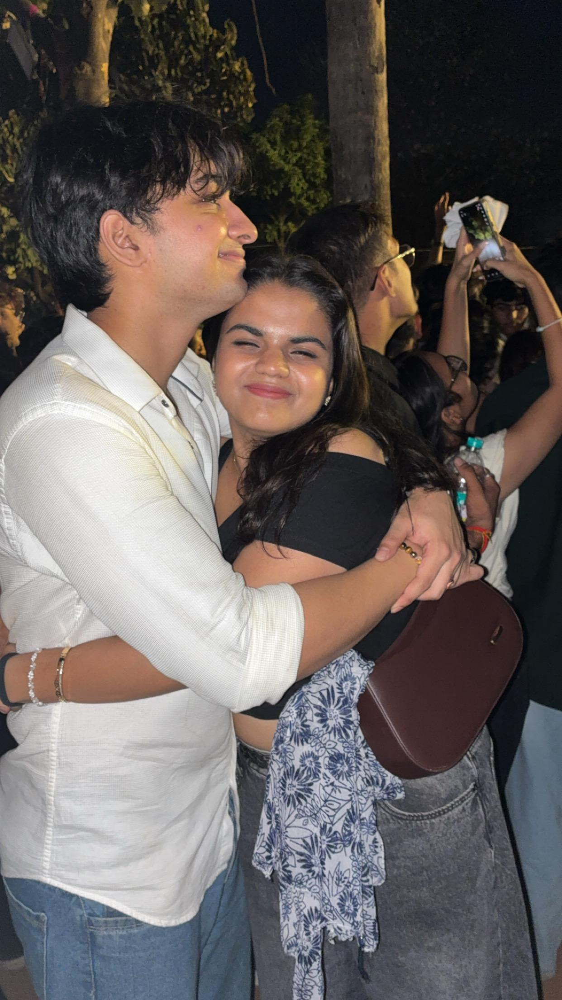
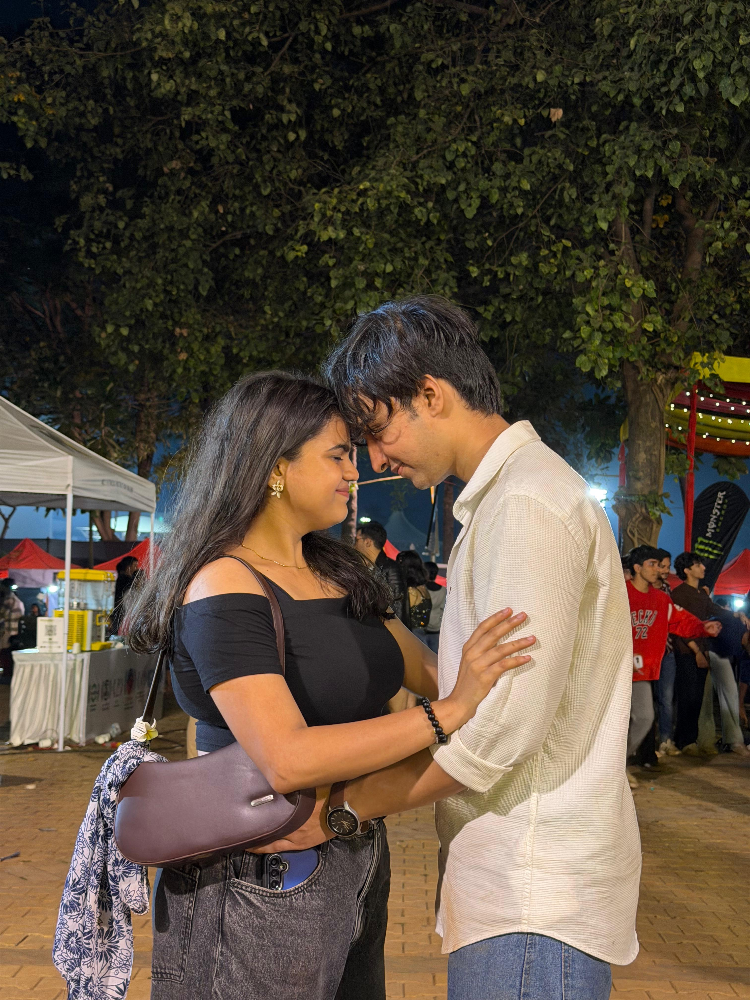

Vidhi
22 July 2025 — Forever Started Here
Time has drifted, seasons have faded, and we've navigated the quiet spaces between words. Every second is a testimony that we chose to stay.
The Real Story
Surviving the beautiful storm.
Our love is not a flawless cinematic fairytale. It was born in laughter, but it survived in the absolute chaos. We faced the distance, fought our own shadows, and let misunderstandings grow in the silences.
Especially in these last 3 months, things grew difficult. Overthinking turned quiet evenings into battlefields of the mind. The distance felt heavier, the conversations felt shorter, and the emotional fights left scars we didn’t know how to heal.
Yet, underneath all the noise, the fear, and the doubts—there was always a gravity pulling us back. No matter how far we drifted, we kept returning to each other. Because we realized that being broken together was infinitely more beautiful than being whole apart.


Chapters of Our Heart
Where forever quietly started. The spark that changed the orbit of our lives forever. A simple hello that rewrote our futures and brought us together into a quiet, beautiful promise.
Building bridges over distance. Late night calls, laughing until the birds sang, sharing secrets into glowing screens when the rest of the world slept. Finding comfort in a single voice.

Learning that love is forged in storms. Navigating the quiet spaces, the heavy texts, and the difficult months. When the silence grew loud, yet we still sought to hear each other beneath the fear.

Stripping away the pride, putting down our high shields. Realizing that even in the middle of arguments, we would still choose each other's chaos over anyone else's absolute peace.

The Gallery of Us


Our Anchor
“A single piece of our lives that is forever close to your heart, Vidhi.”
Why Her?
Her Smile
The kind of light that slices through my absolute darkest moods. It is the center of gravity that resets my chaotic day into absolute calm.
The Comfort
Coming home to her is the only shelter I know. An unspoken sanctuary where I can put down my heavy shield and just be.
The Chaos
Beautifully messy, complex, and wild. Her emotional intensity is the spark that keeps our world revolving, making standard lives look pale.
Her Softness
A gentle counter-force to my stubbornness. The quiet grace in the way she forgives, and the tenderness in her voice when we finally stop fighting.
Her Presence
Even when miles keep us physically apart, her presence fills the room. Her aura is woven into every thought I think, and every beat of my chest.
The Way She Stays
Through the worst arguments, the heavy silences, and the misunderstandings—she never truly packs up. She chooses to fight *for* us, time and time again.
We hurt each other sometimes.
We misunderstood each other.
But somewhere between the silence and chaos…
there was still us.
I just want us.”
Counting Down to Our Year
I think I still find you.”